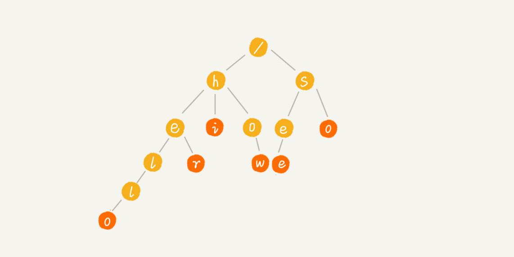
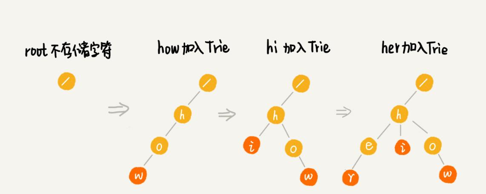
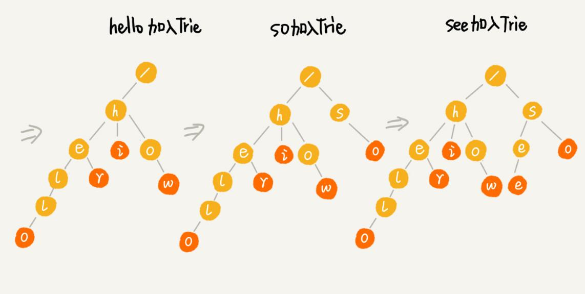
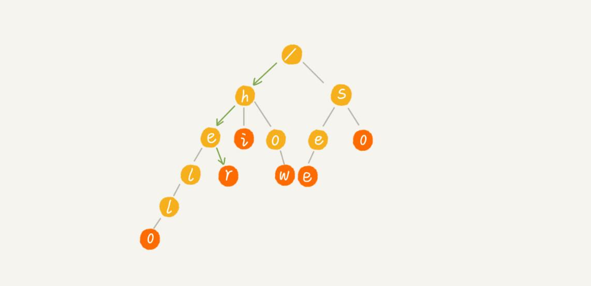
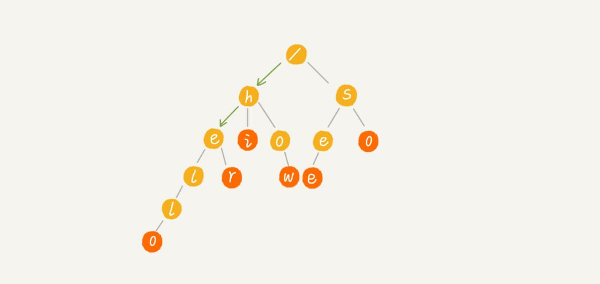
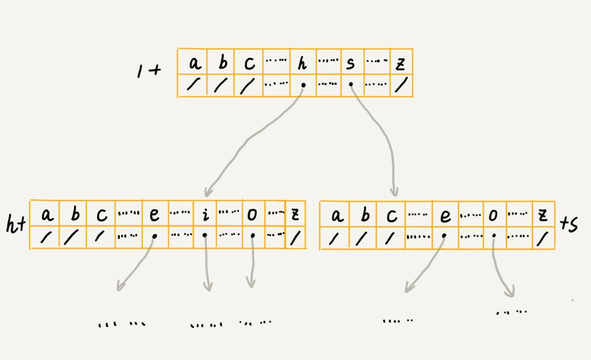
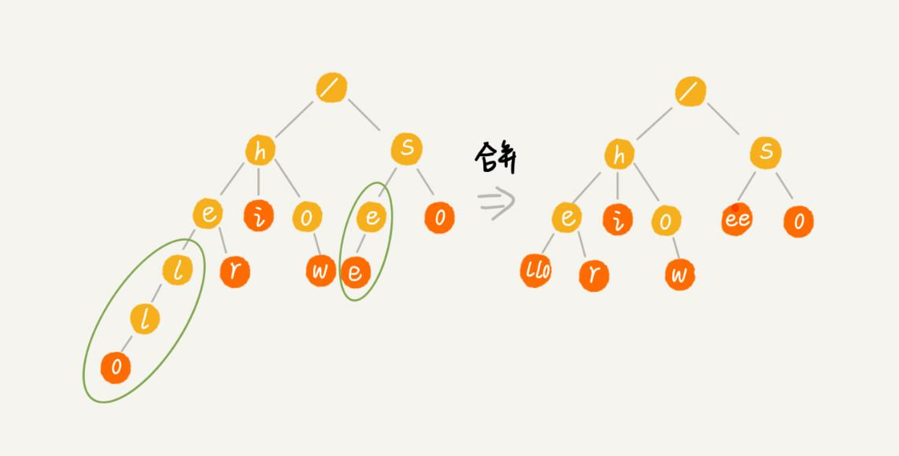
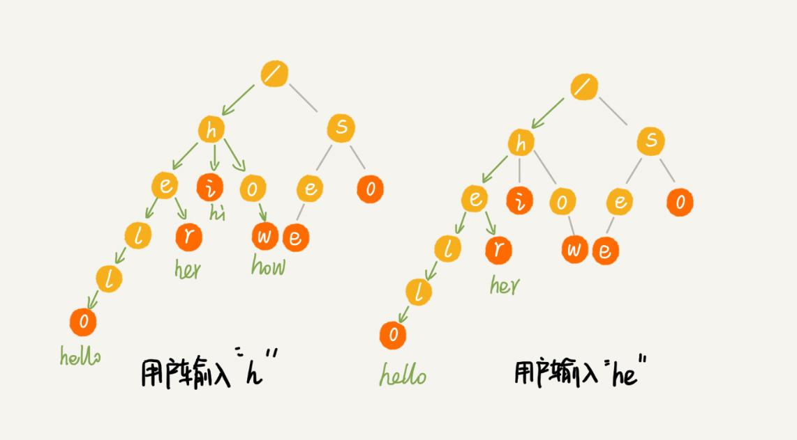

搜索引擎的搜索关键词提示功能，应该不陌生吧？为了方便快速输入，当你在搜索引擎的搜索框中，输入要搜索的文字的某一部分的时候，搜索引擎就会自动弹出下拉框，里面是各种关键词提示。可以直接从下拉框中选择要搜索的东西，而不用把所有内容都输入进去，一定程度上节省了搜索时间。
尽管这个功能几乎天天在用，作为一名工程师，你是否思考过，它是怎么实现的呢？它底层使用的是哪种数据结构和算法呢？
像 Google、百度这样的搜索引擎，它们的关键词提示功能非常全面和精准，肯定做了很多优化，但万变不离其宗，底层最基本的原理就是这种数据结构：Trie 树。
什么是“Trie 树”？
Trie 树，也叫“字典树”。顾名思义，它是一个树形结构。它是一种专门处理字符串匹配的数据结构，用来解决在一组字符串集合中快速查找某个字符串的问题。
举个简单的例子来说明一下。有 6 个字符串，它们分别是：how，hi，her，hello，so，see。希望在里面多次查找某个字符串是否存在。如果每次查找，都是拿要查找的字符串跟这 6 个字符串依次进行字符串匹配，那效率就比较低，有没有更高效的方法呢？
这个时候，就可以先对这 6 个字符串做一下预处理，组织成 Trie 树的结构，之后每次查找，都是在 Trie 树中进行匹配查找。Trie 树的本质，就是利用字符串之间的公共前缀，将重复的前缀合并在一起。最后构造出来的就是下面这个图中的样子。

其中，根节点不包含任何信息。每个节点表示一个字符串中的字符，从根节点到红色节点的一条路径表示一个字符串（注意：红色节点并不都是叶子节点）。
为了更容易理解 Trie 树是怎么构造出来的，下面有一个 Trie 树构造的分解过程。构造过程的每一步，都相当于往 Trie 树中插入一个字符串。当所有字符串都插入完成之后，Trie 树就构造好了。


当在
Trie 树中查找一个字符串的时候，比如查找字符串her，把将要查找的字符串分割成单个的字符 h，e，r，然后从 Trie 树的根节点开始匹配。如图所示，绿色的路径就是在 Trie 树中匹配的路径。
如果要查找的是字符串
he呢？还用上面同样的方法，从根节点开始，沿着某条路径来匹配，如图所示，绿色的路径，是字符串he匹配的路径。但是，路径的最后一个节点e并不是红色的。也就是说，he是某个字符串的前缀子串，但并不能完全匹配任何字符串。
如何实现一棵 Trie 树？
从刚刚 Trie 树的介绍来看，Trie 树主要有两个操作，一个是将字符串集合构造成 Trie 树。这个过程分解开来的话，就是一个将字符串插入到 Trie 树的过程。另一个是在 Trie 树中查询一个字符串。
了解了 Trie 树的两个主要操作之后，再来看下，如何存储一个 Trie 树？
从前面的图中，可以看出，Trie 树是一个多叉树。二叉树中，一个节点的左右子节点是通过两个指针来存储的，如下所示 Java 代码。那对于多叉树来说，怎么存储一个节点的所有子节点的指针呢？
1 | class BinaryTreeNode { |
先介绍其中一种存储方式，也是经典的存储方式，大部分数据结构和算法书籍中都是这么讲的。还记得散列表吗？借助散列表的思想，通过一个下标与字符一一映射的数组，来存储子节点的指针。这句话稍微有点抽象，不怎么好懂，下面有一张图可以看看。

假设字符串中只有从
a 到 z 这 26 个小写字母，在数组中下标为 0 的位置，存储指向子节点 a 的指针，下标为 1 的位置存储指向子节点 b 的指针，以此类推，下标为 25 的位置，存储的是指向的子节点 z 的指针。如果某个字符的子节点不存在，就在对应的下标的位置存储 null。
1 | class TrieNode { |
当在 Trie 树中查找字符串的时候，就可以通过字符的 ASCII 码减去a的 ASCII 码，迅速找到匹配的子节点的指针。比如，d 的 ASCII 码减去 a 的 ASCII 码就是 3，那子节点 d 的指针就存储在数组中下标为 3 的位置中。
把上面的描述翻译成了代码，可以结合着一块看下，应该有助于理解。
1 | public class Trie { |
现在，再来看下，在 Trie 树中，查找某个字符串的时间复杂度是多少？
如果要在一组字符串中，频繁地查询某些字符串，用 Trie 树会非常高效。构建 Trie 树的过程，需要扫描所有的字符串，时间复杂度是 $O(n)$（n 表示所有字符串的长度和）。但是一旦构建成功之后，后续的查询操作会非常高效。
每次查询时，如果要查询的字符串长度是 k，那只需要比对大约 k 个节点，就能完成查询操作。跟原本那组字符串的长度和个数没有任何关系。所以说，构建好 Trie 树后，在其中查找字符串的时间复杂度是 $O(k)$，k 表示要查找的字符串的长度。
Trie 树真的很耗内存吗？
Trie 树是一种非常独特的、高效的字符串匹配方法。但是，关于 Trie 树，有没有听过这样一种说法：“Trie 树是非常耗内存的，用的是一种空间换时间的思路”。这是什么原因呢？
刚刚在讲 Trie 树的实现的时候，讲到用数组来存储一个节点的子节点的指针。如果字符串中包含从 a 到 z 这 26 个字符，那每个节点都要存储一个长度为 26 的数组，并且每个数组存储一个 8 字节指针（或者是 4 字节，这个大小跟 CPU、操作系统、编译器等有关）。而且，即便一个节点只有很少的子节点，远小于 26 个，比如 3、4 个，也要维护一个长度为 26 的数组。
Trie 树的本质是避免重复存储一组字符串的相同前缀子串，但是现在每个字符（对应一个节点）的存储远远大于 1 个字节。按照上面举的例子，数组长度为 26，每个元素是 8 字节，那每个节点就会额外需要 26*8 = 208 个字节。而且这还是只包含 26 个字符的情况。
如果字符串中不仅包含小写字母，还包含大写字母、数字、甚至是中文，那需要的存储空间就更多了。所以，也就是说，在某些情况下，Trie 树不一定会节省存储空间。在重复的前缀并不多的情况下，Trie 树不但不能节省内存，还有可能会浪费更多的内存。
当然，不可否认，Trie 树尽管有可能很浪费内存，但是确实非常高效。那为了解决这个内存问题，是否有其他办法呢？
可以稍微牺牲一点查询的效率，将每个节点中的数组换成其他数据结构，来存储一个节点的子节点指针。用哪种数据结构呢？选择其实有很多，比如有序数组、跳表、散列表、红黑树等。
假设用有序数组，数组中的指针按照所指向的子节点中的字符的大小顺序排列。查询的时候，可以通过二分查找的方法，快速查找到某个字符应该匹配的子节点的指针。但是，在往 Trie 树中插入一个字符串的时候，为了维护数组中数据的有序性，就会稍微慢了点。
实际上，Trie 树的变体有很多，都可以在一定程度上解决内存消耗的问题。比如，缩点优化，就是对只有一个子节点的节点，而且此节点不是一个串的结束节点，可以将此节点与子节点合并。这样可以节省空间，但却增加了编码难度。这里就不展开详细讲解了，如果感兴趣，可以自行研究下。

Trie 树与散列表、红黑树的比较
实际上，字符串的匹配问题，笼统上讲，其实就是数据的查找问题。对于支持动态数据高效操作的数据结构，前面已经讲过好多了，比如散列表、红黑树、跳表等等。实际上，这些数据结构也可以实现在一组字符串中查找字符串的功能。这里选了两种数据结构，散列表和红黑树，跟 Trie 树比较一下，看看它们各自的优缺点和应用场景。
在刚刚讲的这个场景，在一组字符串中查找字符串，Trie 树实际上表现得并不好。它对要处理的字符串有及其严苛的要求。
第一，字符串中包含的字符集不能太大。前面讲到，如果字符集太大，那存储空间可能就会浪费很多。即便可以优化，但也要付出牺牲查询、插入效率的代价。
第二，要求字符串的前缀重合比较多，不然空间消耗会变大很多。
第三，如果要用 Trie 树解决问题，那就要自己从零开始实现一个 Trie 树，还要保证没有 bug，这个在工程上是将简单问题复杂化，除非必须，一般不建议这样做。
第四，通过指针串起来的数据块是不连续的，而 Trie 树中用到了指针，所以，对缓存并不友好，性能上会打个折扣。
综合这几点，针对在一组字符串中查找字符串的问题，在工程中，更倾向于用散列表或者红黑树。因为这两种数据结构，都不需要自己去实现，直接利用编程语言中提供的现成类库就行了。
讲到这里，可能要疑惑了，讲了半天，这里对 Trie 树一通否定，还让用红黑树或者散列表，那 Trie 树是不是就没用了呢？是不是这里的内容就白看了呢？
实际上，Trie 树只是不适合精确匹配查找，这种问题更适合用散列表或者红黑树来解决。Trie 树比较适合的是查找前缀匹配的字符串，也就是类似开篇问题的那种场景。
总结
Trie 树是一种解决字符串快速匹配问题的数据结构。如果用来构建 Trie 树的这一组字符串中，前缀重复的情况不是很多，那 Trie 树这种数据结构总体上来讲是比较费内存的，是一种空间换时间的解决问题思路。
尽管比较耗费内存，但是对内存不敏感或者内存消耗在接受范围内的情况下，在 Trie 树中做字符串匹配还是非常高效的，时间复杂度是 $O(k)$，k 表示要匹配的字符串的长度。
但是，Trie 树的优势并不在于，用它来做动态集合数据的查找，因为，这个工作完全可以用更加合适的散列表或者红黑树来替代。Trie 树最有优势的是查找前缀匹配的字符串，比如搜索引擎中的关键词提示功能这个场景，就比较适合用它来解决，也是 Trie 树比较经典的应用场景。
思考
如何利用
Trie树，实现搜索关键词的提示功能？假设关键词库由用户的热门搜索关键词组成。将这个词库构建成一个
Trie树。当用户输入其中某个单词的时候，把这个词作为一个前缀子串在Trie树中匹配。假设词库里只有hello、her、hi、how、so、see这6个关键词。当用户输入了字母h的时候，就把以h为前缀的hello、her、hi、how展示在搜索提示框内。当用户继续键入字母e的时候，就把以he为前缀的hello、her展示在搜索提示框内。这就是搜索关键词提示的最基本的算法原理。
不过，这里讲的只是最基本的实现原理，实际上，搜索引擎的搜索关键词提示功能远非我讲的这么简单。如果再稍微深入一点，就会想到，上面的解决办法遇到下面几个问题：刚讲的思路是针对英文的搜索关键词提示，对于更加复杂的中文来说，词库中的数据又该如何构建成
Trie树呢？如果词库中有很多关键词，在搜索提示的时候，用户输入关键词，作为前缀在
Trie树中可以匹配的关键词也有很多，如何选择展示哪些内容呢？像
Google这样的搜索引擎，用户单词拼写错误的情况下，Google还是可以使用正确的拼写来做关键词提示，这个又是怎么做到的呢？
实际上，
Trie树的这个应用可以扩展到更加广泛的一个应用上，就是自动输入补全，比如输入法自动补全功能、IDE代码编辑器自动补全功能、浏览器网址输入的自动补全功能等等。如果现在有一个很大的字符串集合，比如包含
1万条记录，如何通过编程量化分析这组字符串集合是否比较适合用Trie树解决呢？也就是如何统计字符串的字符集大小，以及前缀重合的程度呢？欢迎留言和我分享。


评论加载中